В глубине леса ещё теплится забытый свет. Помоги маленькому хранителю найти дорогу к древнему дереву.
ТРИ МИРА ТРИ ТРОПЫ ТРИ ГЛАВЫ
ВСЕ ТРИ ТРОПЫ ПРОЙДЕНЫ
Лес проснулся
Вы победили и прошли игру!
Последняя тень исчезла. Огоньки вернулись к древнему дереву — и в его ветвях снова зажглась жизнь. Луми больше не один: теперь у него есть дом.
ТВОЁ ПУТЕШЕСТВИЕ
Тропы сновидений
Три тропы · По восемь уровней · ◇ Последний уровень каждой тропы — встреча со стражем.

ЛЕСНАЯ ЛАВКА
Лавка для Луми
ПУТЕШЕСТВИЕ В ТВОЁМ ТЕМПЕ
Настройки
Режим жизней применяется с начала следующего уровня или после рестарта.
ОБ ИГРЕ
Свет, который ищет дорогу домой
Луми просыпается среди притихших деревьев. Он не помнит, откуда пришёл, — только чувствует, как в прозрачной груди теплится маленький огонёк.
Древнее дерево погрузилось в глубокий сон, и его воспоминания рассыпались по лесу искрами. Ручьи замерли, тропы начали разрушаться, а из забытых тревог появились тени.
Следуя за светом через утренний лес, затонувшие руины и ночные кроны, Луми узнает, кем он был и почему лес всё ещё ждёт его возвращения. Помоги маленькому хранителю собрать потерянные воспоминания и разбудить сердце дерева.
Твой путь
Собирай огоньки на уровнях, чтобы открывать двери на следующую тропинку. В конце каждой тропы сначала собери все огоньки, затем победи босса: уклоняйся от тёмных выстрелов и собирай свет на арене, чтобы атаковать. За последним стражем тебя ждёт пробуждение леса.
A / D или ← / → — идти · Space / W дважды — двойной прыжок · Esc — пауза
Маленькие лапки. Огромный мир снов.
Собирай огоньки и входи в светящиеся ворота. Падение в тёмную бездну отнимает жизнь.